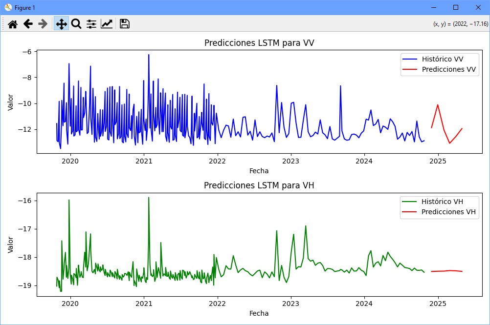

Zonas seguras
Descripción del mapa.
Zonas a evitar
Descripción del mapa.
Información Adicional
Más detalles sobre desastres.
Ensenada es una ciudad portuaria mexicana en el lado del Pacífico de la península de Baja California. En Ensenada, México, los incendios forestales ocurren con cierta frecuencia, especialmente durante las temporadas de calor y sequía. La región de Baja California, donde se encuentra Ensenada, tiene un clima mediterráneo semiárido, lo que significa que los veranos son calurosos y secos, mientras que las lluvias se concentran en el invierno. Esto, junto con factores como la baja humedad y los fuertes vientos, crea condiciones propicias para incendios forestales, especialmente en las áreas rurales y montañosas.
Los incendios en Ensenada y sus alrededores suelen intensificarse entre finales de primavera y otoño. Además de las condiciones climáticas, otros factores como la expansión urbana, la agricultura y las prácticas agrícolas también contribuyen a un mayor riesgo de incendios en la región.
70%
Descripción del mapa.
Descripción del mapa.
Más detalles sobre desastres.